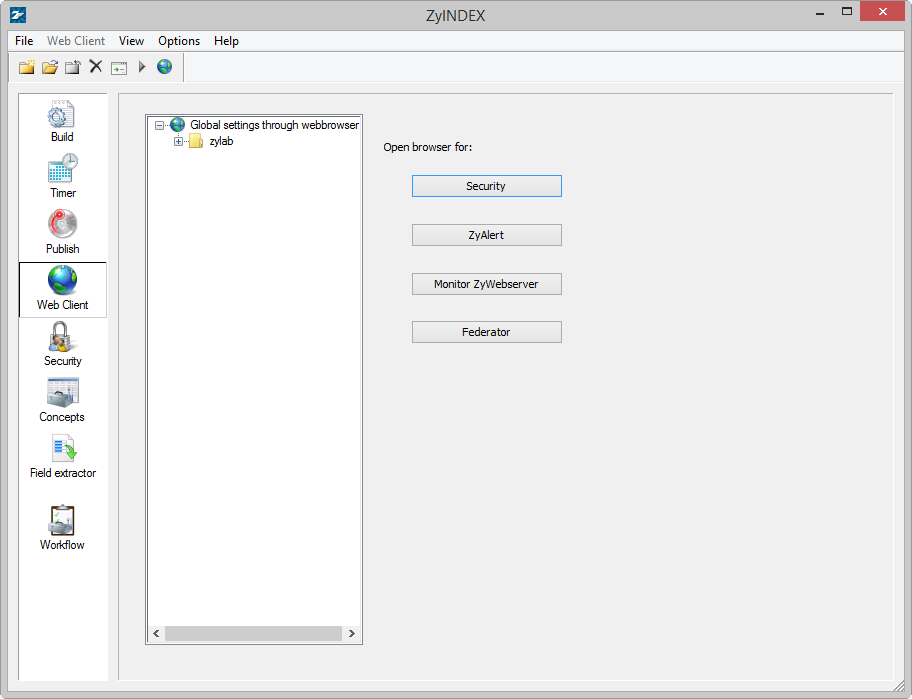
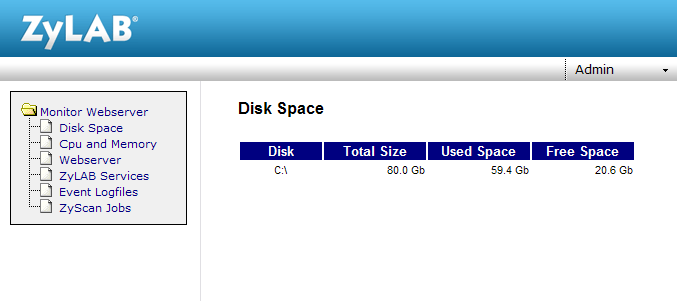

Web Clients are created and configured in ZyINDEX.
In ZyINDEX, click the Web Client button to display the following screen:

The left panel shows the Web Clients that have been created. The right panel contains the following buttons:
Security. Displays the ZyLAB Security Settings web page in your internet browser. For detailed information about ZyLAB security, see the ZyINDEX manual > Security (page 159) chapter.
ZyAlert. Displays the ZyALERT Subscriptions web page in your internet browser. For detailed information, see the ZyALERT manual > ZyALERT: Automatic Searches.
Monitor ZyWebserver. Displays the monitor webserver page in your internet browser from where you can monitor your Webserver. See Monitor Webserver (page 114) for more details.
The Monitor Webserver page lets you monitor the activity of your webserver and the resources it is using on your computer. In the Web Client, go to Admin > Monitor Webserver.

Click on a menu item to display the item's page:
Disk Space
Shows the total-used and free space available on your computer.
CPU and Memory
Displays graphs of the total CPU and Memory usage.
Webserver
Displays the amount of CPU capacity the Webserver is using.
ZyLAB Services
Lists the ZyLAB Windows Services. The checkbox 'Show all services' displays all the Windows services. You can start, stop, pause, continue, interrogate and shutdown selected services.
Event Logfiles
Lets you open the event log from a specified period.
ZySCAN Jobs
Shows the ZySCAN jobs queue.